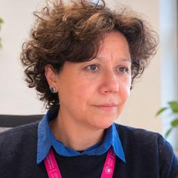

About
I am a Marie Skłodowska-Curie Postdoctoral Fellow at the University of Galway (School of Computer Science). My research focuses on interpretable and explainable AI for medical imaging, in particular segmentation and classification of pediatric brain tumours in MRI, and on clinical decision support systems.
I hold a PhD in Computer Science (2022). My dissertation, Cerebrospinal Fluid Flow Segmentation and Feature Extraction of Phase Contrast MRI Using Deep Learning Technique, proposed a new automatic CSF lumen segmentation pipeline. Before moving to Galway I was an Assistant Professor at Ankara Medipol University, and from 2005 to 2024 I worked at the Ministry of Health in Türkiye as a decision support systems specialist, software project manager and data analyst.
Current project
DL-I-PBraTSC
The project builds an interpretable AI framework that locates pediatric brain tumours, classifies their types and supports quantitative analysis of tumour sub-regions, to assist clinicians in diagnosis, treatment planning, monitoring and outcome prediction. It combines curated multi-centre MRI datasets, an online platform for clinician feedback and a real-world clinical validation step.
Project page on CORDISThis research is supported by the European Union through the Marie Skłodowska-Curie Actions (MSCA).
Selected publications
- Anatomical Structures as Graph Nodes: Representation Before Architecture in Paediatric Brain Tumour LocalisationDiagnostics, 16(21), 3436 · 2026
- A systematic review of vision transformer and explainable AI advances in multimodal facial expression recognitionIntelligent Systems with Applications, 29, 200615 · 2026
- ClinAlignNet: A Clinician-Interactive Framework for Faithful and Aligned Explainability in MRIIEEE ISBI 2026
- A Global-Local 3D Brain Tumor Segmentation Model Using Vision Transformers and Axial Statespace ModelingACDSA 2026
Full list on Google Scholar and my University of Galway profile.
Experience
MSCA Postdoctoral Fellow
Assistant Professor
Visiting Researcher
Ministry of Health, Türkiye
- Decision support systems and spatial analysis for national health policy
- Large-scale health information system projects, including national e-payment and e-Pulse
- Database administration, PL/SQL development and business intelligence (Oracle BI)